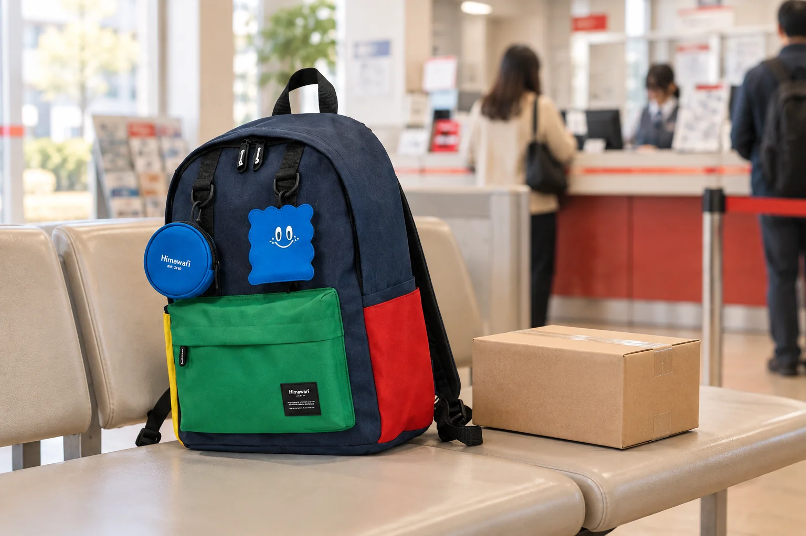

우체국에 작은 소포를 부치러 갈 때: 상자와 백팩의 역할 나누기

작은 상자 하나를 부치러 나가도 창구 앞에서는 주소, 포장, 결제 수단, 개인 물건을 동시에 챙기게 됩니다. 상자를 백팩에 넣어 갔다가 접수대에서 모든 짐을 쏟아내기보다, 접수할 물건과 하루 동안 쓸 개인 물건의 역할을 나누는 편이 움직임을 단순하게 만듭니다. 접수 방식과 포장 기준은 이용할 우편 서비스의 최신 안내를 확인하세요. 여기서는 어떤 서비스가 제공된다고 약속하기보다 가방을 열고 닫는 순간의 순서를 정리합니다.
출발 전에는 상자의 닫힘과 안내부터 봅니다
상자 겉면이 눌려 열리거나 테이프 끝이 들뜨지는 않았는지 살펴보세요. 내용물에 따른 접수 가능 여부, 포장 방식, 필요한 표기는 서비스를 이용하는 곳의 공식 안내를 따릅니다. 주소나 연락처처럼 개인 정보가 적힌 면은 이동 중 다른 사람이 볼 수 있으므로 불필요하게 노출하지 않도록 주의하세요. 가방에는 휴대전화와 결제 수단 등 평소 개인 물건만 남기고, 접수할 상자는 별도로 잡기 쉬운 상태로 준비합니다.
대기할 때는 두 물건을 같은 자리로 몰지 않습니다
번호표나 안내를 확인하는 동안 소포를 백팩 위에 불안정하게 올려놓으면 상자도 가방도 움직일 수 있습니다. 서서 기다리는 곳이라면 한 손은 상자, 다른 손은 개인 물건을 관리하는 식으로 역할을 정하세요. 잠시 내려놓을 수 있는 장소와 방식은 현장 안내를 먼저 따릅니다. 앞주머니에서 무엇을 찾을지 미리 정해 두면 줄이 움직일 때 백팩 전체를 벗어 펼치는 일을 줄일 수 있습니다.
창구 앞에서는 상자부터 내고 가방은 닫아 둡니다
접수할 상자가 먼저 확인될 수 있도록 손에 두고, 결제나 확인에 필요한 소지품만 그다음에 꺼냅니다. 직원의 질문이나 안내에 따라 포장 보완이 필요할 수도 있으니 가방에 넣어 둔 물건을 무리하게 꺼내며 서두르지 마세요. 우편 요금과 규정은 물건과 서비스에 따라 달라질 수 있으므로 현장에서 확인합니다. 접수 중에는 가방의 지퍼를 닫고 몸 가까이에 두어 다른 사람의 동선을 막지 않게 합니다.
접수 후에는 증빙의 자리를 바로 정합니다
접수증이나 전자 안내를 받았다면 확인해야 할 정보와 보관 기간을 해당 서비스 안내에 맞춰 살펴보세요. 종이 증빙을 받는 경우 접히거나 잃어버리기 쉬운 손바닥 위에 오래 들고 있기보다 가방 안의 정해 둔 평평한 곳에 넣습니다. 필요하지 않은 개인 정보가 보이는 사진을 공개 채널에 올리지 않는 것도 중요합니다. 소포를 맡긴 뒤 빈손이 되었다고 바로 떠나기 전에 휴대전화와 지갑이 돌아왔는지 확인하세요.
대표 사진은 실제 접수 장면이 아닙니다
사진은 실제 Himawari No.0422 블루 제품의 원본을 참조해 별도 상자가 놓인 대기 공간을 AI로 연출한 것입니다. 특정 우체국의 내부, 실제 직원, 고객 접수 경험이나 우편 서비스 조건을 기록한 사진이 아닙니다. No.0422의 외부 크기는 가로 30 × 세로 40 × 폭 15cm로 확인되지만, 소포를 이 가방에 담을 수 있다는 뜻도 아닙니다. 서비스 절차는 방문처의 최신 안내를 우선하세요.
참고·안내
- Himawari No.0422 제품 정보
- 실제 Himawari No.0422 블루 제품을 참조해 백팩과 접수 전 소포를 별도로 둔 AI 연출입니다. 실제 고객이나 우체국 접수 장면이 아닙니다.
자주 묻는 질문
상자를 백팩에 넣어 이동해도 되나요?
상자의 실제 크기와 가방 입구, 기존 짐을 함께 비교해 결정하세요. 이 글은 상자와 개인 물건을 별도로 관리하는 동선을 예로 들며 수납 가능성을 보증하지 않습니다.
우편 요금이나 접수 규칙도 이 글대로 따르면 되나요?
아니요. 요금과 포장·접수 기준은 이용할 우편 서비스의 공식 최신 안내와 현장 설명을 확인해야 합니다.